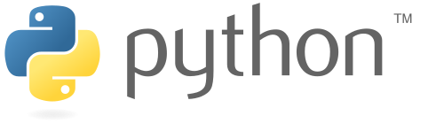

파이썬 (Python)은 1991년 네덜란드계 소프트웨어 엔지니어인 귀도 반 로섬이 발표한 고급 프로그래밍 언어로, '인터프리터를 사용하는 객체지향 언어'이자 플랫폼에 독립적인, 동적 타이핑(dynamically typed) 대화형 언어다.
파이썬이라는 이름은 귀도가 좋아하는 코미디인〈Monty Python's Flying Circus〉에서 따온 것이다. 이름에서 고대신화에 나오는 커다란 뱀을 연상하겠지만 이와는 무관하다. 다만 로고에는 뱀 두마리가 형상화되어 있다.

간결하고 읽기 쉬운 문법이 특징인 프로그래밍 언어로 데이터 분석, 웹 개발, 인공지능 등 다양한 분야에서 활용된다. 파이썬은 초보자부터 전문가까지 사용자층을 보유하고 있다.
다양한 플랫폼에서 쓸 수 있고, 라이브러리(모듈)가 풍부하여, 대학을 비롯한 여러 교육 기관, 연구 기관 및 산업계에서 이용이 증가하고 있다.
또 파이썬은 순수한 프로그램 언어로서의 기능 외에도 다른 언어로 쓰인 모듈들을 연결하는 접착제 언어로써 자주 이용된다. 실제 파이썬은 많은 상용 응용 프로그램에서 스크립트 언어로 채용되고 있다. 도움말 문서도 정리가 잘 되어 있으며, 유니코드 문자열을 지원해서 다양한 언어의 문자 처리에도 능하다.